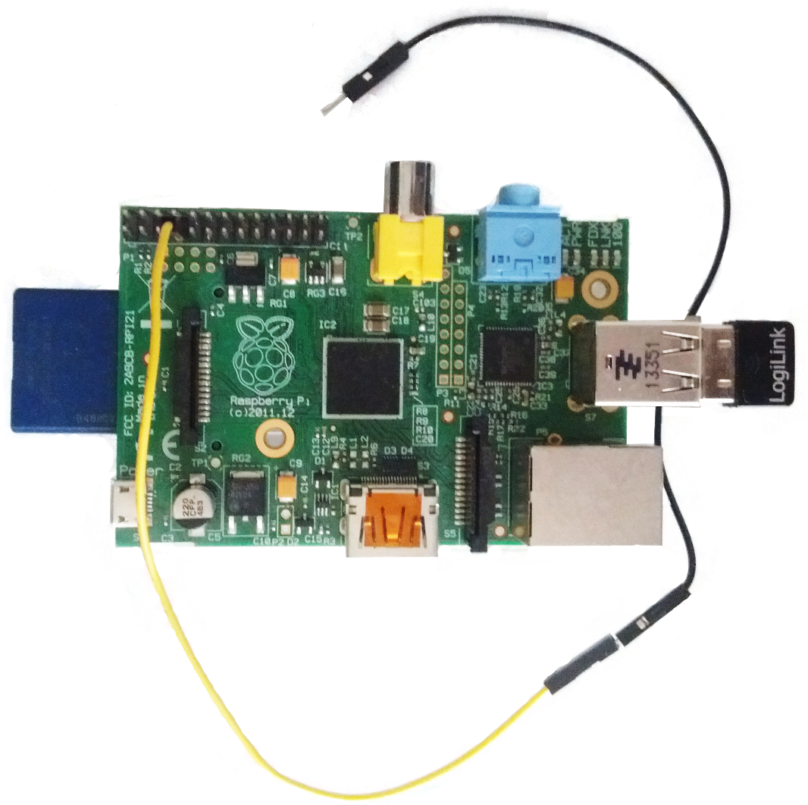
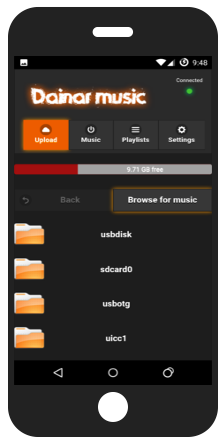
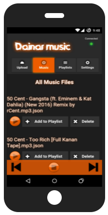
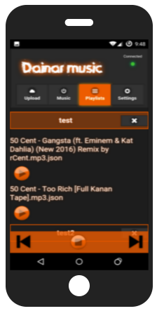
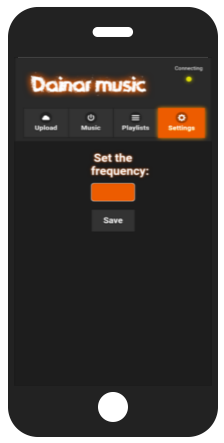

Dainar Music is an android app that plays music to FM frequences with the help of a raspberry pi web server. Just follow the steps bellow, tune in to the frequency you want from your car or home radio and listen to your favorite music! Keep scrolling to learn how it works and download it!
Dainar music android app is developed using the Adobe PhoneGap mobile app development framework along with Jquery mobile HTML5-based user interface system framework.
Dainar music server app that resides inside the raspbian image is developed using Node.js and Express.js. In order for the raspberry pi -or equivalent board- to be able to transmitt to fm frequencies, I've used the pifm python library.
Everything is developed and distributed under the MIT License (MIT), and its open to everyone that want to make it better or customize for him/herself.
On the next few sections you can find how to setup Dainar music and as well as download it.
Keep in mind that although the app is working, it is still in BETA and it may have some bugs. I am aware that there may be better ways to achieve the same result. This is just a personal project i made and i want to share it. For any questions or suggestions use the contact section!
Once you have downloaded the image from the download section, use this guide to burn it to an sd card (WRITING AN IMAGE TO THE SD CARD section).
You will also need a wifi dongle for your raspberry pi, unless it has one onboard.
Then you need a copper wire (about 10-20cm), like these to use as an antenna on the raspberry pi. You just have to put in on the 4th pin of the left row like the picture below.
After you plug all the above to the raspberry pi, insert the sd card with the raspian img and power it up.
That's it! The Dainar music server app will start by default everytime you power up your rpi! You can then connect to its wifi and start the andoid app! The ssid (wifi name) is Dainarmusic and the password is ... You can't change the password yet but you will be able to do so in the next release.
Installing the app on android is really simple.
Once you have downloaded the .apk file from the download section you have to transfer it to your android device (smartphone or tablet), either by the usb cable or by directly downloading the .apk on your device.
Then you just have to tap the .apk file and install it on your device. You may have to enable a setting that allows you to install .apk files on your android.
You can follow this guide in on how to install and .apk file on your android device.
1. First you choose the songs from your devise to upload to the raspberry pi, on the upload tab.
2. Then you can browse the songs from the music tab, play them, or create playlists.
3. After that you can go to the playlists tab and play the songs of the playlist you choose.
4. Lastly there is the settings tab which currently has the setting of the frequency to transmit.
You can download the raspbian image with dainar music installed. The image also has the pifm library installed and autostarts the nodejs server on boot. The nodejs app runs at ip: 192.168.2.1 and on port: 3000.
Download the raspbian imageIf you just want the server Nodejs-Expressjs code you can clone it from its github repo.
You can download the android apk file and install it to your android devise as explained in the setup section.
Download the apk fileIf you want the android app code (PhoneGap) you can clone it from its github repo.
You can always contact me via e-mail at: fytros.n@gmail.com.
{kind=link}